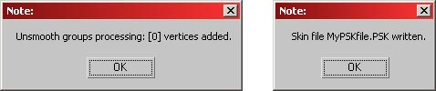
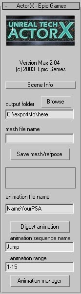

UDN
Search public documentation:
ActorXMaxTutorialJP
English Translation
中国翻译
한국어
Interested in the Unreal Engine?
Visit the Unreal Technology site.
Looking for jobs and company info?
Check out the Epic games site.
Questions about support via UDN?
Contact the UDN Staff
中国翻译
한국어
Interested in the Unreal Engine?
Visit the Unreal Technology site.
Looking for jobs and company info?
Check out the Epic games site.
Questions about support via UDN?
Contact the UDN Staff
ActorX および Max を使用したアニメーションのエクスポートの仕方
ドキュメントの概要: 3DS Max で ActorX を使用したアニメーションのエクスポートの仕方についてのチュートリアル。プラグインのインストール
- Max のActorX アドオンをダウンロードし、それをプラグインディレクトリにコピーします。
- Max を起動し、ActorX が自動的にロードされます。ユーティリティタブ下で見つけることができます。(これを使用するのが初めての場合は、 more ボタンをクリックすることで見つけられます)
 プラグインの有効化がエラーメッセージの原因となっている場合 - 一番一般的なのは "failed to initialize"(初期化に失敗)です。 この場合は、ご利用になっているシステムが、最新の Windows システムのアップデートで最新になっているかを確認し、Microsoft .Net フレームワークアップデートのダウンロードおよびインストールを行って下さい。こちらがそのリンクです。 http://www.microsoft.com/downloads ( ダウンロード製品/テクノロジーボックスで「.net」を選択し、 [go] を押します)。これが修正されない場合は、, getfrom the ActorX ページから msvcr71.dll を入手し、手動で windows\system32 フォルダ、または、 ActorX プラグインに平行しているプラグインフォルダに配置します。
プラグインの有効化がエラーメッセージの原因となっている場合 - 一番一般的なのは "failed to initialize"(初期化に失敗)です。 この場合は、ご利用になっているシステムが、最新の Windows システムのアップデートで最新になっているかを確認し、Microsoft .Net フレームワークアップデートのダウンロードおよびインストールを行って下さい。こちらがそのリンクです。 http://www.microsoft.com/downloads ( ダウンロード製品/テクノロジーボックスで「.net」を選択し、 [go] を押します)。これが修正されない場合は、, getfrom the ActorX ページから msvcr71.dll を入手し、手動で windows\system32 フォルダ、または、 ActorX プラグインに平行しているプラグインフォルダに配置します。
シーン を設定する
シーンが常に単独の階層に属することに注意してください。 プレースホルダー オブジェクトや、メッシュの一部でないヘルパー要素をすべて削除してください。 3DS Max は、骨格においてのボーン作成が非常にフレキシブルです。 - デフォルトでは、単独階層を構成する限り、すべての一般的なボーンと、ジオメトリ、ダミー、ポイントヘルパー(ActorX プラグイン バージョン 2.14 以降)でリンクしている親-子の関係 は、エクスポータにより骨格ボーンとしてみなされます。 軸と方向に留意してください。: Max からのエクスポートで, メッシュの Y 座標は、Unrealの掌性 (軸の相対方向)に順守するため、符号が反転します。つまり、Max では、 Z 軸が上になり、キャラクターは X 軸に向かってうつぶせになり、Y 軸はスクリーン側に、つまり見ている側とは反対に向き、これが、Unreal の場合、メッシュが X 軸に向かってうつぶせになり、Z 軸が上になり、 Y 軸は見ている人の側に向きます。 - 追加のメッシュプロパティ、例えば、回転やエディタで適用されるマイナスのスケールなどは提供されません。 複数のマテリアルはシーンで使用されます。 それらは、最終メッシュで複数のマテリアルスロットとなり、マテリアル名に "skinXX" タグを付加することで強制しない限り、 序列はデフォルトで任意となります。 - 例： 「Body」と「Head」という名前のマテリアルがあったと仮定し、それらを「Body_Skin00」と「Head_Skin01」に変更した場合、.PSK ファイルを作成時にエクスポータにその序列に順守するよう命令します。個別および "マルチ-サブ" マテリアルの両者を使用することができます。後者を使用時、ご希望のスキン序列タグを各サブマテリアルに置くことができます。これは、骨格メッシュのスロットの序列に影響するだけでなく、レンダリング序列にも影響する恐れがあります。骨格とメッシュのエクスポート
- エクスポートしたいアクタを含むシーンをロードする。
- ユーティリティタブ(上記を参照)に行き、ActorX ダイアログをたちあげ、ActorX を開く。
- 次のフィールドに情報を入れる:
- Output folder: .PSK ファイルを保存したいディレクトリの名前を入力する。 アクタのフォルダ下に "Unreal Files" ディレクトリを入れることをお奨めします。ここでは、ブラウズボタンが非常に役に立ちます。
- Mesh file name: .PSK ファイルの名前を入力します。 アクタの名前をお奨めします。
- [Save mesh/refpose](メッシュ/参照ポーズを保存) ボタンをクリックします。これはあらゆるアニメーションのフレームで行うことができます。 モデルの参照ポーズは、両手を両側にまっすぐ伸ばし、直立した状態を推奨しています。
 [mesh/refpose]を保存後、問題がない場合は、数個のウィンドウがポップアップします。
[mesh/refpose]を保存後、問題がない場合は、数個のウィンドウがポップアップします。

アニメーションをエクスポートする
アニメーションをエクスポートするには 2 通りの方法があります。まず、アニメーションを含んだシーンをロードし、メモリ内に読み込まれるようアニメーションを "digest" します。このセッションにエクスポートしたいアニメーションの数に応じてこれを繰り返します。 2 つめの方法は、PSA ファイルに新しいアニメーションを追加し、バックアウトを保存します。アニメーションのダイジェスト
- エクスポートしたいアニメーションを含むファイルをロードする。
- ユーティリティタブを開き ActorX ダイアログを立ち上げ、ActorX オプションを開く。 (上記で記載したように、[more] ボタンをクリックする必要があります)
- 次のフィールドに情報を入れる:
- Output folder: 上記の [skeleton/mesh] と同様。
- Animation file name: 「mesh file name」 (個別にするため、異なる拡張子を持ちます) と同じ事項を推奨。 既存の.PSA にアニメーションを追加した場合は、その既存する.PSA ファイルの名前を入力する。
- Animation sequence name: .PSA ファイル内で表示したいアニメーションの名前を入力する。
- Animation range: このアニメーションを定義するカレントのシーンにあるフレームを指定する。(フォーマットは、4-45; 数値、ハイフン、数値)

- 最初のフレームで、レンジスライダおよびタイムスライダは 0 を表示しているのを確認する。(注記: これは、ActorX での定期的なバグクラッシュを回避するための弊社の確認行動です。自己責任において、このステップを省いてください。)
- Digest Animation をクリックする。 これが終了すると、処理が成功/失敗したかのウィンドウが表示 されません 。
- エクスポートしたいアニメーションの数に応じて、1-5 のステップを繰り返す。ActorX がクラッシュし、再起動しなくてはいけない場合があるため、一度に多くの処理をしようとすることは推奨しておりません。
.PSA ファイルにアニメーションを追加する
アニメーションのダイジェストが終了したら、 .PSA ファイルに追加することができます。
- 表示されていない場合、ActorX ダイアログを立ち上げる。
- [animation manager] ボタンをクリックし、「animation manager」を表示する。
- 既存の .PSA ファイルにアニメーションを追加する場合は、 [Load] をクリックし、.PSA ファイルをロードする。(前の 3b でアニメーションの名前を提供済みを前提とする。そうでない場合は、[_Load As......] ボタンを使用)
- 「animations」 リストの左側に、ダイジェストしたアニメーションが表示される。右側には、.PSA ファイルにすでにあるアニメーションが表示される。新規の.PSA ファイルを作成する場合は、ここは空になっている。
- 新しいアニメーションを選択し、 --> をクリックし、アウトプットパッケージにアニメーションを追加する。
- [Save] をクリックし、.PSA ファイル バックアウトを保存する。 (アニメーションファイルの名前をすでにつけている事を前提とする)

バッチ処理
各キャラクターのアニメーションリストは、非常に時間のかかる .PSA ファイルの作成のプロセスを促進します。このプロセスを簡素化するため、既存のファイルにあるアニメーションすべての ActorX プロセスを 1 つのステップに納める事が可能です。アニメーションを準備する
バッチ処理を行う前に、アニメーションのフォーマット化が必要です。- .max ファイルフォーマットになっている必要があります。
- 共に処理されるすべてのアニメーションは、単独のディレクトリに存在しなければなりません。
- 各ファイルには、独自の開始/終了時間の設定が正しくされていなければなりません。Click the3D-Studio の [Time Configuration] ボタンをクリックし
 、セットアップします。
、セットアップします。
- エンジン内に入ったファイルは、アニメーションと同じ名前になっていなければいけません。
アニメーションのエクスポート
次のステップに従いアニメーションが正しくセットアップできたら、.PSA ファイルにエクスポートするため次のステップにしたがってください。- ActorX で 「Output Folder」 フィールドに、.PSA ファイルの位置を入力する。
- .PSA ファイルの名前を 「Animation File Name」 フィールドに入力する。
- ツールの 「Actor X - Setup」 セクションで、 「cull unused dummies」 をチェックする。
- 「Actor X - Setup」 セクションで、 「Process all Animations」 をチェックする。ActorX により、すべてのアニメーションが存在するフォルダに促されます。 フォルダを選択し、 [OK] をクリックする。
- これで、アニメーションがインポートされる。 [Animation Manager] をクリックし、「Animation Manager」ウィンドウを開く(上記を参照)。 左のリストはこれまでにダイジェストしたアニメーションのリストです。右のカラムは、 「Animation File Name」 フィールドで選択した .PSA ファイルにあるアニメーションのリストです。
- 左のカラムからエクスポートしたいアニメーションを選び、 [Copy ==>] ボタンをクリックし、 .PSA アニメーションが存在する領域にコピーする。
- [Save](保存) をクリックする。 .PSA ファイルが作成される。
付加的な ActorX オプション
「ActorX - Setup」セクションの「animation manager」ボタンの底部に豊富なオプションがあることにお気づきになったことでしょう。 下記にそれらの説明を順序だててしていきます。Persistent(持続)設定とパス
この 2 つのオプションは、ご覧の通りです。; これらをチェックすると、上記のフィールドに設定を保ちます。そのため、メッシュやアニメーションをエクスポートしたい時に、その都度、再入力の必要がありません。Skin Export(スキンエクスポート)
このオプションでは、エクスポートされたジオメトリ/アニメーションで、どの条件の入力が必要かを決定しますAll Skin-Type(すべてのスキンタイプ)
これがチェックされると、 skin/physique モディファイヤを持つファイルにあるメッシュがエクスポートされます。 このオプションは、シーンが あらゆる 変形可能なスキンを持つ場合、 必ず チェックされなければいけません。 このチェックがはずされると、すべてのメッシュが剛体を仮定され、各ボーンにより制御されます。All Textured(テクスチャされたものすべて)
テクスチャを持つジオメトリのすべてがエクスポートされます。All Selected(選択されているものすべて)
現在選択されているジオメトリすべてがエクスポートされます。「invert」(反転) チェックボックスは、選択されて いない ジオメトリをエクスポートします。Force Reference Pose T=0 (強制参照ポーズ)
このオプションは、参照ポーズとして、 T=0 でポーズの使用を強制します。 他のフレームでアニメーションを持つファイルから PSK をエクスポートする場合にのみ便利で、どういう訳か、スライダの最初のフレームは、アニメーションではフレームが 0 ではありません。デフォルト設定では、エンジンは、PSK ファイルのエクスポートするアクティブなスライダ範囲の最初のフレームを使用します。そういう理由で、フレーム0 がアクティブな範囲の一部になっていることを推奨しているのです。 通常では、既知で、特にポーズをとっている静的な参照ポーズから PSK をエクスポートするようにしてください。これにより、参照ポーズとしてランダムなポーズを取っているものがエクスポートされる可能性がなくなります。Tangent UV Splits(タンジェント UV 分割)
常にこのオプションをオフにしておいて下しさい。そうでない場合は、このオプションを無視します。Bake Smoothing Groups(スムーズ化グループをベイク）
骨格モデルのスムーズかは、UnrealEd で幾分か奇妙に処理されます。キャラクターモデルにグループのスムーズ化をつけようとすると、エクスポータは、グループのエッジに沿ってモデルをブレイクし、別々の要素にセクションを作成します。このプロセスは、スムーズ化されたエッジに沿った頂点の分割に関係しています。次に独自で個別の要素をスムーズ化しようとしますが、それでも大きな「結合した」メッシュの一部として表示されます。 すなわち、 スムーズにする代わりに、頂点カウントを増加することとなります。スムーズ化グループを多く持つほど、頂点も多く持つこととなります。そのため、グループのスムーズ化を骨格モデルでは薦めていないのです。; このオプションのチェックを外しておくことをお奨めします。ボーン
Cull Unused Dummies(未使用のダミーをカル)
ボーン チェーンの終わりにダミーを使用している場合、このオプションはメモリ確保のため、それらを削除します。Cull Root Dummy(ルートダミーをカル)
このオプションは無効になっています。モーション
Fix Root Net Motion(ルート ネットモーションを修正)
ルートボーンが動くようにモデルがアニメーション化されている場合は、このオプションではその動きを無効にするようにできます。つまり、 このオプションは、 Max で前進しながら動いているように作成されたモデルは、UnrealEd では、その場にとどまったまま、動いているように見えるようにします。Hard Lock(ハードロック)
このオプションは無視して下さい。Logfiles/No Log Files(ログファイル/ログファイルなし)
ご覧いただいている通りの機能です。何かが正しくエクスポートされていないと思った時にチェックするのに便利なソースです。 ここにさまざまな情報を列挙します; 階層情報付きのボーンリスト、 頂点/フェース/フレーム数とマテリアル # スロットなど。 また、期待通りにエクスポートされた骨格、スキンデータの確認は、ボーンコントローラや添付の使用において、ボーンの内部名を知りたい場合などに行いたいはずです。スクリプト テンプレート
UnrealScript? は以前、Unreal 内にモデルやアニメーションをインポートする必要がありました。 幸いなことに、これを行う必要がもうありません。ご自身で何を行っているかがわかっている場合を除き、無視してください。MaxScript を使用してのバッチのエクスポート
プラグイン改訂番号 2.18 で、すべての主要なコマンドやスイッチは、 MaxScript コマンドとして公開されます。 反復タスクを自動化するためスクリプトを使用することができます。例えば、複数のファイルから膨大な数のアニメーションシーケンスを確保することなどです。 MaxScript サンプルファイル にてコマンドの説明がされています。 中断のないバッチ処理のため、MaxScript からのエクスポータのコマンドの使用は、従来の ActorX 確認ダイアログとポップアップを抑制します。ただし、スクリプトを中止するエラーは除きます。トラブルシューティング
"Unmatched Node ID"(ノード ID が一致しません)警告
よくある問題は、"Unmatched Node ID" (ノード ID が一致しません)警告が表示されることです。つまり。エクスポータがボーンと関連付けられないシーンにメッシュジオメトリがあるということです。例えば、メッシュの一部がメインの階層に正しくリンクしていないが、「 Physique」または「Skin」モディファイヤがあるなどです。上記のセットアップノートで説明したように、シーンにあるものすべては、すべてのボーンおよびオブジェクトが、骨格のルートボーン/ルートオブジェクトに最終的にひも付けするボーンとして動作する、単独のツリー型階層になければいけません。二足、または、ダミー「ヘルパー」ジオメトリにテクスチャリングがないようにしてください。必要がない場合は(すべてのスキンが Physique か Max スキンの時)、 ActorX セットアップパネルの 「Skin Export」 下にある 「all textured」のチェックをはずしてください。"Invalid number of physique bone influences" (影響する physique ボーン数が無効)警告
通常、これは、1 つかそれ以上のボーン影響を持つメッシュ頂点という意味ですが、おそらく、無効のゼロのウェイトを持っています。 (physique または skin モディファイヤ) ウェイトの手動調整を行ってください。; もしそれができない場合は、メッシュのスキニング セットアップをやり直してください。ダウンロード
- ActorXMaxScriptExample.ms: エクスポートの自動化用 MaxScript? ファイルのサンプル。